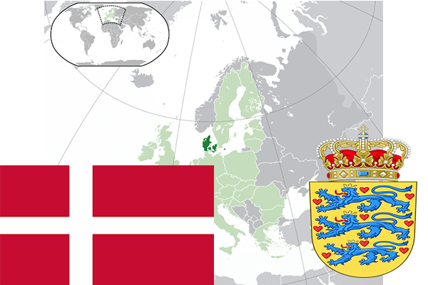

To`liq nomi: Daniya Qirolligi
Region: Shimoliy Yevropa
Qonunchilik shakli: Konstitutsion Monarxiya
Mustaqillik kuni : VIII asr
Poytaxt: Kopengagen
Maydoni: 43 094 km² (dunyoda 130 -o`rinda )
Chegaradosh davlatlari: Germaniya
Aholisi: 5 693 085 (dunyoda 110 -o`rinda, 2011 -yil roʻyxat)
Aholi zichligi: 126,4 /km²
Aholining o`rtacha yoshi: 78,05 yil ( 80,4 ayollar, 75,7 erkaklar)
Rasmiy tili: Daniya tili
Dini: Lyuteran-evangelist
Pul birligi: Daniya kronasi
Telefon prefiksi: +45
Internet domen: .dk
Xalqaro tashkilotlarga a`zoligi: BMT (1945– yildan), Yevropa Ittifoqi (1973-yildan), Shimoliy Atlantika Shartnomasi tashkiloti (1943-yildan)
Dengiz va okeanlarga chiqishi: Shimoliy Muz okeani, Boltiq va shimoliy dengizlar
YIM: Butun: $ 200,796 mlrd, Jon boshiga: $ 36 336 (2010 - yil roʻyxati)
Yirik shaharlari: Kopengagen, Orxus, Odense, Olborg